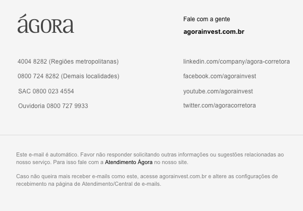

|
|||||||||||||||||||||
|
VANTAGENS Fundo investido teve rentabilidade de 211% do CDI em 12 meses (base julho/2018)¹. Investimento a partir de R$ 10 mil. Mais de 10 estratégias em um só produto. Baixa correlação com os principais fundos de multimercado do mercado. Gestão com expertise em mercados internacionais, permitindo diversificação e redução do risco Brasil. |
|||||||||||||||||||||
| Este produto está disponível por tempo limitado. Fale com um de nossos assessores e veja se esse investimento se encaixa no seu perfil de investidor. | |||||||||||||||||||||
|
|||||||||||||||||||||
| Consulte os riscos das operações e a compatibilidade com o seu perfil antes de investir. Rentabilidade passada não representa garantia de rentabilidade futura. O Kapitalo Kappa FIC FIM Ágora é destinado a investidores com perfil Dinâmico e Arrojado. Nota: (1) O fundo Kapitalo Kappa FIC FIM Ágora é um fundo espelho que investe no Kapitalo Kappa FIN FIQ FIM. | |||||||||||||||||||||
|  | |||||||||||||||||||||